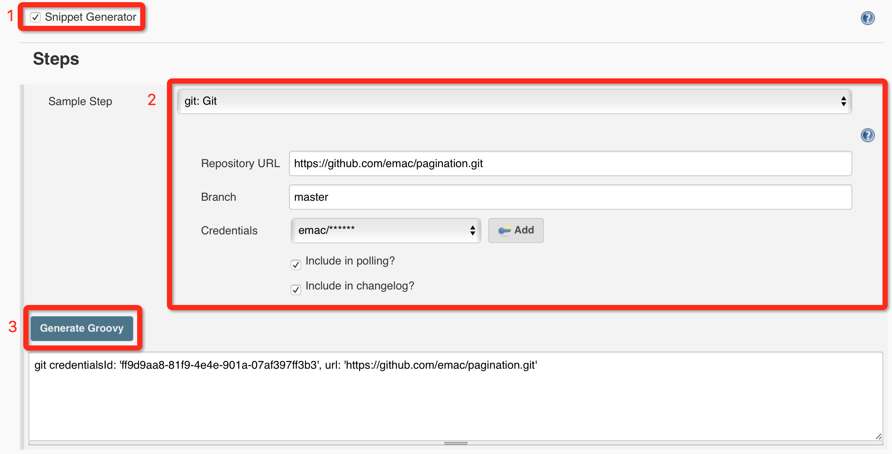
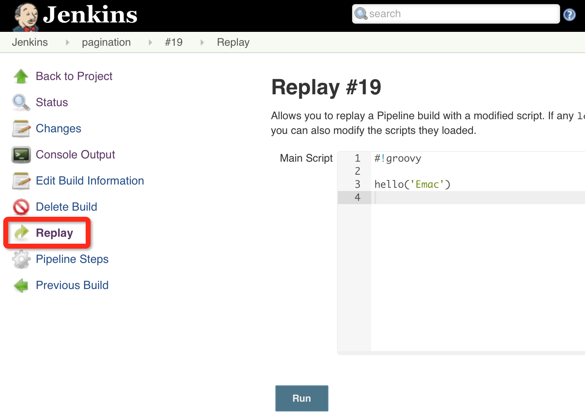
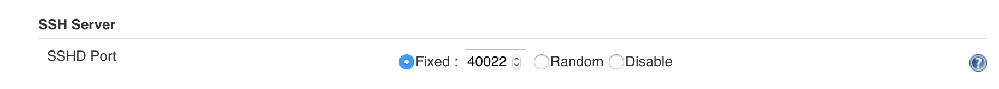
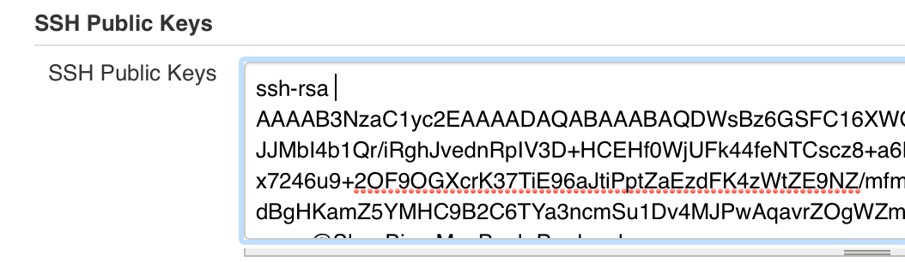

<!DOCTYPE HTML>
<html>
<head><meta name="generator" content="Hexo 3.9.0">
  <meta charset="utf-8">
  <meta http-equiv="X-UA-Compatible" content="IE=edge">
  <meta name="apple-mobile-web-app-capable" content="yes">
  <meta name="apple-mobile-web-app-status-bar-style" content="black">
  <meta name="google-site-verification" content>
  
  <title>【Jenkins】Pipeline使用进阶</title>
  <meta name="author" content="Emac">
   <meta name="description" content="无所不能，无所不及的Pipeline得益于Jenkins内嵌的Groovy支持，加上丰富的Step库，通过编写自定义Pipeline脚本你几乎可以实现任何复杂的构建、发布流程。下面简单谈谈使用Pipeline的四个段位。
I. 启蒙老师：Snipper GeneratorJenkins晦涩的行文风格">
  

  <meta property="og:title" content="【Jenkins】Pipeline使用进阶">
  <meta name="viewport" content="width=device-width, initial-scale=1, maximum-scale=1">
  <meta property="og:site_name" content="Emac">
 <meta property="og:image" content="undefined">
  
  <link href="/apple-touch-icon-precomposed.png" sizes="180x180" rel="apple-touch-icon-precomposed">
  <link rel="alternate" href="/atom.xml" title="Emac" type="application/atom+xml">
  <link rel="stylesheet" href="//cdn.bootcss.com/bootstrap/3.3.6/css/bootstrap.min.css">
  <link rel="stylesheet" href="//cdn.bootcss.com/font-awesome/4.5.0/css/font-awesome.min.css">
  <link rel="stylesheet" href="/css/m.min.css">
  <link rel="icon" type="image/x-icon" href="/favicon.ico">
</head>
</html>
<body>
  <div id='wx_pic' style='display:none;'></div>
  <div id="main">
    <div class="behind">
      <div class="back">
        <a href="/" class="black-color"><i class="fa fa-times" aria-hidden="true"></i></a>
      </div>
      <div class="description">
        &nbsp;拾贝
      </div>
    </div>
    <div class="container">
      

  <article class="standard post">
    <div class="title">
      
  
    <h1 class="page-title center">
        【Jenkins】Pipeline使用进阶
    </h1>
  


    </div>
    <div class="meta center">
      
<time datetime="2016-05-21T16:00:00.000Z">
  <i class="fa fa-calendar"></i>&nbsp;
  2016-05-22
</time>


    
    &nbsp;
    <i class="fa fa-tag"></i>&nbsp;
    <a href="/categories/devops/">devops</a>


    
    &nbsp;
    <i class="fa fa-tag"></i>&nbsp;
    <a href="/tags/原创/">原创</a>·<a href="/tags/CI-CD/">CI/CD</a>


    </div>
    <hr>
    <div class="picture-container">
      
    </div>
    <h2 id="无所不能，无所不及的Pipeline"><a href="#无所不能，无所不及的Pipeline" class="headerlink" title="无所不能，无所不及的Pipeline"></a>无所不能，无所不及的Pipeline</h2><p>得益于Jenkins内嵌的Groovy支持，加上<a href="https://jenkins.io/doc/pipeline/steps/" target="_blank" rel="noopener">丰富的Step库</a>，通过编写自定义Pipeline脚本你几乎可以实现任何复杂的构建、发布流程。下面简单谈谈使用Pipeline的四个段位。</p>
<h2 id="I-启蒙老师：Snipper-Generator"><a href="#I-启蒙老师：Snipper-Generator" class="headerlink" title="I. 启蒙老师：Snipper Generator"></a>I. 启蒙老师：Snipper Generator</h2><p>Jenkins晦涩的行文风格并没有随着2.0的发布有所改善，Step库的<a href="https://jenkins.io/doc/pipeline/steps/" target="_blank" rel="noopener">官方参考手册</a>成功的延续了Jenkins一贯的惜字如金风格，大多数Step都只有一句话的描述和一些参数类型，罕有使用样例，比如<a href="https://jenkins.io/doc/pipeline/steps/workflow-scm-step/#git-git" target="_blank" rel="noopener">Git Step</a>。要理解这些Step，基本靠脑补。好在Jenkins提供了一款良心产品，<a href="https://jenkins.io/doc/pipeline/#using-snippet-generator" target="_blank" rel="noopener">Snipper Generator</a>，帮助使用者在Pipeline配置界面3步生成正确的调用语句。</p>
<p></p>
<h2 id="II-调试利器：Replay-Pipeline"><a href="#II-调试利器：Replay-Pipeline" class="headerlink" title="II. 调试利器：Replay Pipeline"></a>II. 调试利器：Replay Pipeline</h2><p>维护过CI的同学一定知道，在成功创建一个正确、稳定运行的CI任务之前，往往需要历经多次调试和优化，创建Pipeline更是如此。为了避免重复打开配置界面调整Pipeline脚本，Jenkins贴心的提供了<a href="https://jenkins.io/blog/2016/04/14/replay-with-pipeline/" target="_blank" rel="noopener">Replay</a>功能。打开任意一次执行历史，在左侧点击Replay按钮，即可复原该次执行所运行的Pipeline脚本，无论脚本来源是任务本身还是远程仓库。</p>
<p></p>
<h2 id="III-隐藏秘籍：Workflow-Global-Library"><a href="#III-隐藏秘籍：Workflow-Global-Library" class="headerlink" title="III. 隐藏秘籍：Workflow Global Library"></a>III. 隐藏秘籍：Workflow Global Library</h2><p>很多人不知道，Jenkins默认会启动一个SSHD服务，用于在<a href="https://wiki.jenkins-ci.org/display/JENKINS/Jenkins+CLI" target="_blank" rel="noopener">CLI</a>方式下执行一些Jenkins命令。Jenkins 2.0在此基础上，绑定了一个本地Git库（Workflow Global Library，简称WGL），用于上传一些全局共享的Groovy脚本，供同一Jenkins实例下所有Pipeline脚本调用。具体使用步骤如下：</p>
<ol>
<li><p>进入系统配置界面，找到SSH Server配置项，指定一个固定的SSH端口。<br></p>
</li>
<li><p>进入当前用户的配置页面，绑定SSH Public Key。<br></p>
</li>
<li><p>打开命令行，运行<code>git clone ssh://&lt;user&gt;@&lt;host&gt;:&lt;port&gt;/workflowLibs.git</code>拉取WGL。</p>
</li>
<li>在Git库的根目录下创建vars目录，编写Groovy脚本并存放于此，提交代码并Push至远程库。</li>
</ol>
<figure class="highlight groovy"><table><tr><td class="gutter"><pre><span class="line">1</span><br><span class="line">2</span><br><span class="line">3</span><br><span class="line">4</span><br></pre></td><td class="code"><pre><span class="line"><span class="comment">// hello.groovy，一个简单的示例Groovy脚本，定义了一个名为hello的全局方法</span></span><br><span class="line"><span class="keyword">def</span> call(name) &#123;</span><br><span class="line">    echo <span class="string">"Hello, $&#123;name&#125;!"</span></span><br><span class="line">&#125;</span><br></pre></td></tr></table></figure>
<h2 id="IV-如来神掌：Jenkins-Plugin"><a href="#IV-如来神掌：Jenkins-Plugin" class="headerlink" title="IV. 如来神掌：Jenkins Plugin"></a>IV. 如来神掌：Jenkins Plugin</h2><p>如果你需要同时维护多个Jenkins实例，那么WGL就不再适用了，因为每一个Jenkins实例你都需要上传一份脚本。这时就要祭出Jenkins Plugin大法，也即将共享的Groovy脚本封装到一个自定义Jenkins Plugin中，然后安装到需要的Jenkins实例中，以后也可以进行统一升级，有效降低了维护成本。要实现这一点，除了<a href="https://wiki.jenkins-ci.org/display/JENKINS/Extend+Jenkins" target="_blank" rel="noopener">传统的定义Jenkins Plugin的方法</a>，Jenkins<a href="https://jenkins.io/blog/2016/04/21/dsl-plugins/" target="_blank" rel="noopener">官方博客</a>还提供了另一种更为简便的封装方式，具体可以参考我的这个GitHub项目，<a href="https://github.com/emac/demo-pipeline-step" target="_blank" rel="noopener">demo-pipeline-step</a>。</p>
<h2 id="延伸阅读"><a href="#延伸阅读" class="headerlink" title="延伸阅读"></a>延伸阅读</h2><p>利用强大、灵活的Pipeline，我们可以像组装乐高玩具一般操纵Jenkins，根据实际情况构建所需的CI/CD流程。近期我设计的<a href="https://zybuluo.com/emac/note/330205" target="_blank" rel="noopener">Frigate</a>发布系统正式利用Jenkins Pipeline无缝衔接各个发布环节。</p>
<h2 id="参考"><a href="#参考" class="headerlink" title="参考"></a>参考</h2><ul>
<li><a href="https://jenkins.io/blog/2016/04/14/replay-with-pipeline/" target="_blank" rel="noopener">Replay a Pipeline with script edits</a></li>
<li><a href="https://jenkins.io/blog/2016/04/21/dsl-plugins/" target="_blank" rel="noopener">Making your own DSL with plugins, written in Pipeline script</a></li>
</ul>


  </article>
  </script>
    <script async src="https://dn-lbstatics.qbox.me/busuanzi/2.3/busuanzi.pure.mini.js">
  </script>
  <div class="busuanzi center">
    页阅读量:&nbsp;<span id="busuanzi_value_page_pv"></span>&nbsp;・&nbsp;
    站访问量:&nbsp;<span id="busuanzi_value_site_pv"></span>&nbsp;・&nbsp;
    站访客数:&nbsp;<span id="busuanzi_value_site_uv"></span>
  </div>


    </div>
  </div>
  <footer class="page-footer"><div class="clearfix">
</div>
<div class="right-foot container">
    <div class="firstrow">
        <a href="#top" >
        <i class="fa fa-arrow-right"></i>
        </a>
        © emacoo.cn 2015-2020
    </div>
    <div class="secondrow">
        <a href="https://github.com/gaoryrt/hexo-theme-pln">
        
        </a>
    </div>
</div>
<div class="clearfix">
</div>
</footer>
  <script src="//cdn.bootcss.com/jquery/2.2.1/jquery.min.js"></script>
<script src="/js/search.js"></script>
<script type="text/javascript">

// comments below to disable loading animation
function revealOnScroll() {
  var scrolled = $(window).scrollTop();
  $(".excerpt, .index-title, .index-meta, p").each(function() {
    var current = $(this),
      height = $(window).outerHeight(),
      offsetTop = current.offset().top;
    (scrolled + height + 50 > offsetTop) ? current.addClass("animation"):'';
  });
}
$(window).on("scroll", revealOnScroll);
$(document).ready(revealOnScroll)

// disqus scripts


// dropdown scripts
$(".dropdown").click(function(event) {
  var current = $(this);
  event.stopPropagation();
  $(current).children(".dropdown-content")[($(current).children(".dropdown-content").hasClass("open"))?'removeClass':'addClass']("open")
});
$(document).click(function(){
    $(".dropdown-content").removeClass("open");
})

// back to top scripts
$("a[href='#top']").click(function() {
  $("html, body").animate({ scrollTop: 0 }, 500);
  return false;
});


var path = "/search.xml";
searchFunc(path, 'local-search-input', 'local-search-result');

</script>

</body>
</html>
